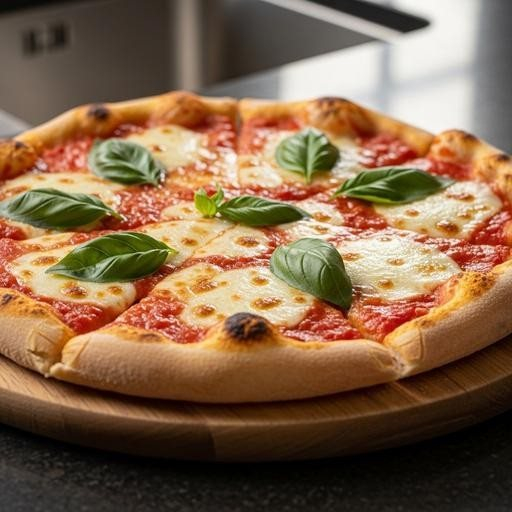

Salgados · Massas fritas/assadas
Pizza Margherita

Ingredientes
- 2 tabletes de fermento biológico
- 2 colheres (café) de açúcar
- 2 xícaras de leite morno
- 6 colheres (sopa) de óleo
- 1 colher (chá) de sal
- 4 xícaras de farinha de trigo
- Manteiga para untar
- 4 xícaras de queijo mozarela ralado grosso
- 3 xícaras de tomates sem pele e sem sementes picados
- 1 ½ xícara de folhas de manjericão
- Azeite para regar
Modo de preparo
- Numa tigela, dissolva o fermento e o açúcar no leite morno. Acrescente o óleo e o sal. Misture bem. Vá acrescentando a farinha peneirada, aos poucos, até formar uma massa que não grude nas mãos. Cubra a massa e deixe descansar por cerca de 30 minutos, ou até dobrar de volume.
- Preaqueça o forno em temperatura média (180 °C). Divida a massa em três partes e, com as mãos, forre 3 fôrmas para pizza de 30 cm de diâmetro, untadas. Deixe a massa com uma espessura uniforme. Leve ao forno por 15 minutos, até começar a dourar.
- Misture o queijo, o tomate e o manjericão. Distribua sobre a pizza e regue com um fio de azeite. Deixe esfriar completamente e congele.
Observação
Se você for fazer pizza com cobertura de aliche, deixe para colocá-lo somente quando descongelar a pizza. Congelamento: leve a pizza aberta ao freezer e, quando estiver congelada, desenforme e embrulhe em filme plástico ou coloque em um saco plástico que feche hermeticamente; etiquete e leve de volta ao freezer. Você pode congelar os discos de pizza sem recheio: siga a receita apenas até o passo 2. Descongelamento: leve a pizza diretamente do freezer ao forno preaquecido em temperatura alta (220 °C); retire quando a massa ficar dourada e o queijo derreter. Variação: para uma pizza de calabresa, frite rodelas de cebola em óleo, retire do fogo e frite as rodelas de linguiça na mesma panela; distribua as rodelas de linguiça sobre a massa de pizza e, por cima, as rodelas de cebola.